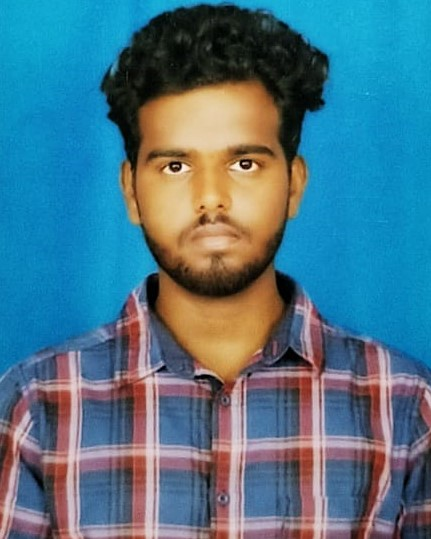

|  | Rajesh ReddyUnderGraduate student in Vel Tech Rangarajan Dr.Sagunthala R&D Institute of Science and Technology Department of Electronics & Communication Engineering(B.Tech) Email ID : vtu15991@veltech.edu.in DOB : 05 June 2001 Phone Number : 6300847403 |
myself S Rajesh Reddy and I am undergraduate student in veltech university
This is Sane Rajesh Reddy. I am 21 years old. Basically I'm from Kurnool , but currently staying in Chennai.
I completed my 12th from Narayana Juniour College . Which is in Hyderabad.
And currently pursuing B.tech from veltech university. which is in Chennai.I'm very intrested on IT field. And I want to become a developer in Information Technology.
* Certified by COURSERA with A grade for successfully completing the course " Operating Systems and you : Becomming a power user"